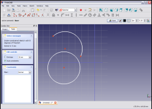
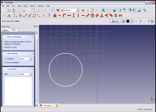
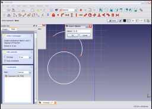
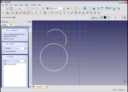

|
| Menu location |
|---|
| Sketch → Sketcher constraints → Constrain radius |
| Workbenches |
| Sketcher, PartDesign |
| Default shortcut |
| None |
| See also |
| Constraint Distance, Constraint Horizontal, Constraint Vertical |
Contents |
Description
This constraint constrains the value of the radius of a circle or arc to have a specific value. Only one arc or circle can be constrained at a time.
Operation

Select an arc or circle in the sketch by clicking on is ( turns dark green to indicate selection).

Apply the constraint by clicking on the Constrain Radius icon in the Sketcher toolbar or selecting the Constrain radius menu item from the Sketcher constraints sub menu of the the Sketcher (or Part Design) menu item (depending upon which workbench is selected).
The radius is constrained to have its current value when the constraint is applied.
To change the constraint value either double click on the constraint in the 3D display (turning red indicates the constraint is currently selected) or by double clicking on the constraint in the Constraints panel of the Tasks tab of the Combo View.
This will bring up a pop-up window.

Enter the desired value for the radius into the pop-up window and click OK to set the value of the constraint.

The constraint value is set to the value entered in the pop-up window.
{kind=link}
{kind=link}
{kind=link}
{kind=link}
{kind=link}
{kind=link}